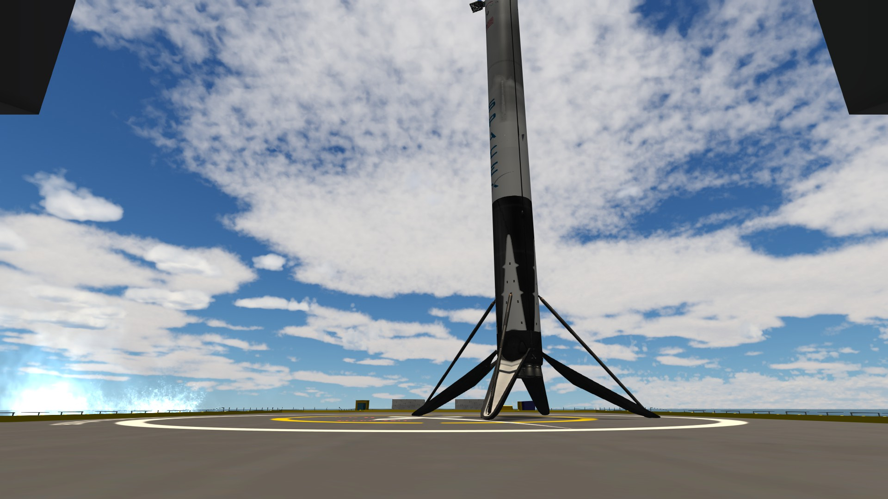

Nuestra Flota
Vehículos espaciales de última generación diseñados para misiones de alta precisión
0
Lanzamientos totales
0
Lanzamientos Falcon 9
0
Misiones Falcon Heavy

Falcon 9 Block 5
El Falcon 9 es un cohete reutilizable diseñado para misiones de órbita baja, media, geoestacionaria y más allá.

Falcon Heavy
El Falcon Heavy es un cohete de alta capacidad reutilizable diseñado para misiones de altos requerimientos.

Dragon
La cápsula Dragon, adquirida por Halcon Space, permite transporte seguro de tripulación y carga a órbita, así como el retorno de materiales y experimentos a Kerbin. Combina las capacidades de Crew Dragon y Cargo Dragon en una flota unificada.

Propulsores Falcon 9 & Falcon Heavy
Obtenga información de cada propulsor disponible en Halcon Space, incluyendo modelos retirados.